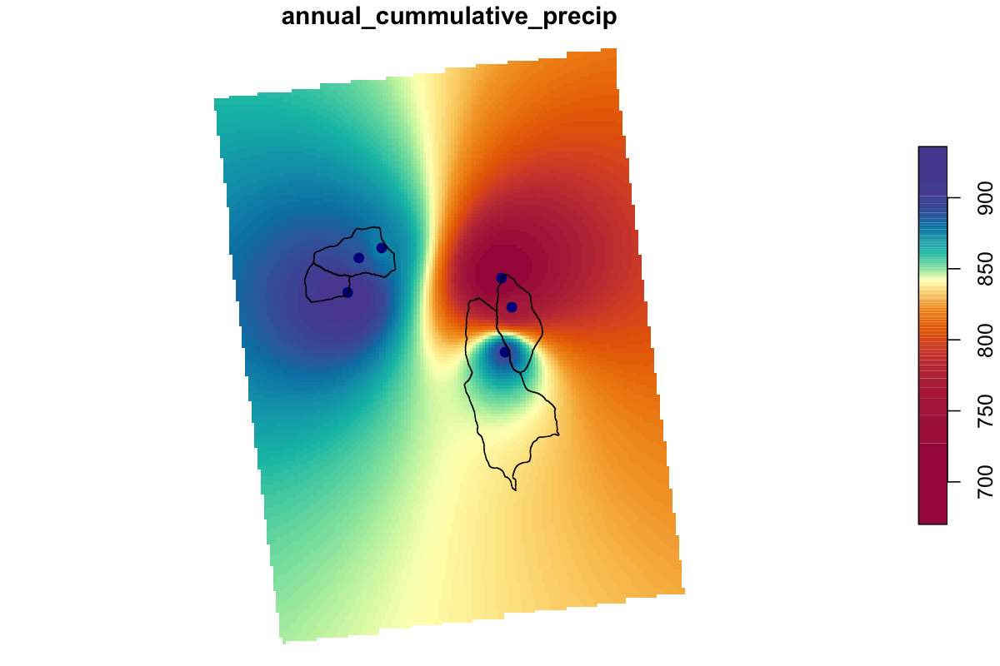

Chapter 5 Physical Process Models
5.1 Snowmelt Models
5.1.1 Learning Module 7
5.1.1.1 Background:
Understanding snowmelt runoff is crucial for managing water resources and assessing flood risks, as it plays a significant role in the hydrologic cycle. Annual runoff and peak flow are influenced by snowmelt, rainfall, or a combination of both. In regions with a snowmelt-driven hydrologic cycle, such as the Rocky Mountains, snowpack acts as a natural reservoir, storing water during the winter months and releasing it gradually during the spring and early summer, thereby playing a vital role in maintaining water availability for various uses downstream. By examining how snowmelt interacts with other factors like precipitation, land cover, and temperature, we can better anticipate water supply fluctuations and design effective flood management strategies.
Learning objectives:
In this module, our primary focus will be modeling snowmelt as runoff, enabling us to predict when it will impact streamflow timing. We will consider some factors that may influence runoff timing. However, the term ‘snowmelt modeling’ is a field in itself and can represent a lifetime worth of work. There are many uses for snowmelt modeling (e.g., climate science and avalanche forecasting). If you are interested in exploring more on this subject, there is an excellent Snow Hydrology: Focus on Modeling series offered by CUAHSI’s Virtual University on YouTube.
Helpful terms:
The most common way to measure the water content of the snowpack is by the Snow Water Equivalent or SWE. The SWE is the water depth resulting from melting a unit column of the snowpack.
5.1.1.2 Model Approaches
Similar to the model development structure we discussed in the last module, snowmelt models are generally classified into three different types of abalation algorithms
Empirical and Data-Driven Models: These models use historical data and statistical techniques to predict runoff based on the relationship between snow characteristics (like snow area) and runoff. They use past patterns to make predictions about the future. The emergence of data-driven models has benefited from the growth of massive data and the rapid increase in computational power. These models simulate the changes in snowmelt runoff using machine learning algorithms to select appropriate parameters (e.g., daily rainfall, temperature, solar radiation, snow area, and snow water equivalent) from different data sources.
Conceptual Models: These models simplify the snowmelt process by establishing a simple, rule-based relationship between snowmelt and temperature. These models use a basic formula based on temperature to estimate how much snow will melt.
Physical Models: The physical snowmelt models calculate snowmelt based on the energy balance of snow cover. If all the heat fluxes toward the snowpack are considered positive and those away are considered negative, the sum of these fluxes is equal to the change in heat content of the snowpack for a given time period. Fluxes considered may be
- net solar radiation (solar incoming minus albedo),
- thermal radiation,
- sensible heat transfer of air (e.g., when air is a different temperature than snowpack),
- latent heat of vaporization from condensation or evaporation/sublimation, heat conducted from the ground,
- advected heat from precipitation
examples: layered snow thermal model (SNTHERM) and physical snowpack model (SNOWPACK),
Many effective models may incorporate elements from some or all of these modeling approaches.
5.1.1.3 Spatial complexity
We may also identify models based on the model architecture or spatial complexity. The architecture can be designed based on assumptions about the physical processes that may affect the snowmelt to runoff volume and timing.
Homogenous basin modeling: You may also hear these types of models referred to as ‘black box’ models. Black-box models do not provide a detailed description of the underlying hydrological processes. Instead, they are typically expressed as empirical models that rely on statistical relationships between input and output variables. While these models can predict specific outcomes effectively, they may not be ideal for understanding the physical mechanisms that drive hydrological processes. In terms of snow cover, this is a simplistic case model where we assume:
- the snow is consistent from top to bottom of the snow column and across the watershed
- melt appears at the top of the snowpack
- water immediately flows out the bottom
This type of modeling may work well if the snowpack is isothermal, if we are interested in runoff over large timesteps, or if we are modeling annual water budgets in lumped models.
Vertical layered modeling: Depending on the desired application of the model, snowmelt may be modeled in multiple layers in the snow column (air-snow surface to ground). Climate models, for example, may estimate phase changes or heat flux and consider the snowpack in 5 or more layers. Avalanche forecasters may need to consider grain evolution, density, water content, and more over hundreds of layers! Hydrologists may also choose variable layers, but many will choose single- or two-layer models for basin-wide studies, as simple models can be effective when estimating basin runoff. Here is a study by Dutra et al. (2012) that looked at the effect of the number of snow layers, liquid water representation, snow density, and snow albedo parameterizations within their tested models. Table 1 and figures 1-3 will be sufficient to understand the effects of changes to these parameters on modeled runoff and SWE. In this case, the three-layer model performed best when predicting the timing of the SWE and runoff, but density improved more by changing other parameters rather than layers (Figure 1).
Lateral spatial heterogeneity: The spatial extent of the snow cover determines the area contributing to runoff at any given time during the melt period. The more snow there is, the more water there will be when it melts. Therefore, snow cover tells us which areas will contribute water to rivers and streams as the snow melts. In areas with a lot of accumulated snow, the amount of snow covering the ground gradually decreases as the weather warms up. This melting process can take several months. How quickly the snow disappears depends on the landscape. For example, in mountainous ecosystems, factors like elevation, slope aspect, slope gradient, and forest structure affect how the snow can accumulate, evaporate or sublimate and how quickly the snow melts.
For mountain areas, similar patterns of depletion occur from year to year and can be related to the snow water equivalent (SWE) at a site, accumulated ablation, accumulated degree-days, or to runoff from the watershed using depletion curves from historical data. Here is an example of snow depletion curves developed using statistical modeling and remotely sensed data. The use of remotely sensed data can be incredibly helpful to providing estimates in remote areas with infrequent measurements. Observing depletion patterns may not be effective in ecosystems where patterns are more variable (e.g., prairies). However, stratified sampling with snow surveys, snow telemetry networks (SNOTEL) or continuous precipitation measurements can be used with techniques like cluster analyses or interpolation, to determine variables that influence SWE and estimate SWE depth or runoff over heterogeneous systems.
You can further explore all readings linked in the above section. These readings may assist in developing the workflow for your term project, though they are optional for completing this assignment. However, it is recommended that you review the figures to grasp the concepts and retain them for future reference if necessary.
5.1.1.4 Model choices: My snow is different from your snow
When determining the architecture of your snow model, your model choices will reflect the application of your model and the processes you are trying to represent. Recall that parsimony and simplicity often make for the most effective models. So, how do we know if we have a good model? Here are a few things we can check to validate our model choices:
Model Variability: A good model should produce consistent results when given the same inputs and conditions. Variability between model runs should be minimal if the watershed or environment is not changing.
Versatility: Check the model under a range of scenarios different from the conditions under which it was developed. The model should apply to similar systems or scenarios beyond the initial scope of development
Sensitivity Analysis: We reviewed this a bit in the Monte Carlo module. How do changes in model inputs impact outputs? A good model will show reasonable sensitivity changes in input parameters, with outputs responding as expected.
Validation with empirical data: Comparison with real-world data checks whether the model accurately represents the actual system
Applicability and simplicity: A good model should provide valuable insights or aid in decision-making processes relevant to the problem it addresses. It strikes a balance between complexity and simplicity, avoiding unnecessary intricacies that can lead to overfitting or computational inefficiency while sufficiently capturing the system’s complexities.
5.1.2 Labwork (20 pnts)
5.1.2.1 Download the repo for this lab HERE
In this module, we will simulate snowmelt in a montane watershed in central Colorado with a simple temperature model. The Fool Creek watershed is located in the Fraser Experimental Forest (FEF), 137 km west of Denver, Colorado. The FEF contains several headwater streams (Strahler order 1-3) within the Colorado Headwaters watershed which supplies much of the water to the populated Colorado Front Range. This Forest has been the site of many studies to evaluate the effects of land cover change on watershed hydrology. The Fool Creek is a small, forested headwater stream, with an approximate watershed area of 2.75 km^2. The watershed elevation ranges from approximately 2,930m (9,600ft) at the USFS monitoring station to 3,475m (11,400ft) at the highest point. There is a SNOTEL station located at 3,400m.
We will refer to data from the SNOTEL station as ‘high elevation’ or ‘upper watershed’ data. Data collected from the outlet may be referred to as ‘low elevation’, ‘lower watershed’ or ‘outlet’ data.

Let’s look at some data for Fool Creek:
This script collects SNOTEL input data using snotelr. The SNOTEL automated collection site in Fool Creek supplies SWE data that can simplify our runoff modeling. Lets explore the sites available through snotelr and select the site of interest.
5.1.2.2 Import data:
First, we will generate a conceptual runoff model using the date, daily mean temperature, SWE depth in mm, and daily precipitation (mm) data from the SNOTEL station. We will use select() to keep the desired columns only. Then we will use mutate() to add a water year, and group_by() to add a cumulative precipitation column for each water year.
We will also download flow data collected by USFS at the Fool Creek outlet at 2,930m to compare to simulated runoff.
Let’s look at the data for the SNOTEL station at 3400m in elevation.
5.1.2.3 Calculate liquid input
to the ground by analyzing the daily changes in Snow Water Equivalent (SWE) and precipitation. This script incorporates temperature conditions to determine when to add changes to liquid input.
Let’s visualize the timing disparities between precipitation and melt input in relation to discharge.
5.1.2.4 Modeling SWE
Now we are going to shift focus. Instead of modeling runoff, let’s assume we have precipitation data from 3400m (SNOTEL, upper watershed) in the Fool Creek watershed, but no SWE data. How could we model SWE using temperature data?
Next, we will create a model to estimate SWE and then compare the results to the actual SWE data from the SNOTEL station in the upper Fool watershed.
The model below is a variation of the degree-day method. In this simulation, temperature determines whether precipitation contributes to snowpack or becomes rain. When temperatures fall below a certain threshold and precipitation occurs, that amount is added to the snow water equivalent (SWE) accumulation.
To find the optimal parameters for the upper watershed, we will run 100 Monte Carlo simulations and analyze the results. The key parameters we are testing include:
Pack threshold – The SWE level at which melting begins.
Degree-day factor – The rate at which snow melts per degree above freezing.
Threshold temperature – The temperature that separates snow from rain.
By adjusting these parameters, we aim to refine our model and improve its accuracy in simulating snowpack dynamics.
This simple model seems to simulate SWE well if assessed with the NSE.
Let’s go through the procedure again, but this time we’ll model SWE at the Fool Creek outlet (lower elevation), where we (really) don’t have daily SWE data. First, we’ll import the precipitation data collected from a USFS meteorological station near the Fool Creek outlet.
We also need temperature data. This is also collected at the USFS Lower Fool meteorological station.
Even though this meteorological station is fairly close to the SNOTEL station, the sites differ in elevation. Lets compare the observed cumulative precipitation between the upper watershed and the lower.
Now let’s estimate SWE for the Lower Fool Creek. Again, we’ll just simulate a single year.
Run another set of simulations and compare the values of the best performing parameters across sites.
Since we don’t have SWE measurement for Lower Fool Creek, let’s see how the simulated values for the lower watershed compare to the observed SWE from the high elevation SNOTEL station.
5.2 Evapotranspiration
5.2.1 Repo here
5.2.2 Learning Module 8
20pnts
5.2.2.1 Background
Suggested reading: Forest Evapotranspiration: Measurement and Modeling at Multiple Scales
Evapotranspiration (ET) encompasses all processes through which water moves from the Earth’s surface to the atmosphere, comprising both evaporation and transpiration. This includes water vaporizing into the air from soil surfaces, the capillary fringe of groundwater, and water bodies on land. Much like snowmelt modeling, ET modeling and measurements are critical to many fields and could be a full course on its own. We will be focused on the basics of ET, modeling and data retrieval methods for water balance in hydrological modeling. Evapotranspiration is an important variable in hydrological models, as it accounts for much of the water loss in a system, outside of discharge. Transpiration, a significant component of ET, involves the movement of water from soil to atmosphere through plants. This occurs as plants absorb liquid water from the soil and release water vapor through their leaves. To gain a deeper understanding of ET, let’s review transpiration.
5.2.2.1.1 Transpiration
Plant root systems to absorb water and nutrients from the soil, which they then distribute to their stems and leaves. As part of this process, plants regulate the loss of water vapor into the atmosphere through stomatal apertures, or transpiration. However, the volume of water transpired can vary widely due to factors like weather conditions and plant traits.
Vegetation type: Plants transpire water at different rates. Some plants in arid regions have evolved mechanisms to conserve water by reducing transpiration. One mechanism involves regulating stomatal opening and closure. These plants can minimize water loss, especially during periods of high heat and low humidity. This closure of stomata can lead to diel and seasonal patterns in transpiration rates. Throughout the day, when environmental conditions are favorable for photosynthesis, stomata open to allow gas exchange, leading to increased transpiration. Conversely, during the night or under stressful conditions, stomata may close to conserve water, resulting in reduced transpiration rates.
Humidity: As the relative humidity of the air surrounding the plant rises the transpiration rate falls. It is easier for water to evaporate into dryer air than into more saturated air.
Soil type and saturation: Clay particles, being small, have a high capacity to retain water, while sand particles, being larger, readily release water. During dry periods, transpiration can contribute to the loss of moisture in the upper soil zone.When there is a shortage of moisture in the soil, plants may enter a state of senescence and reduce their rate of transpiration.
Temperature: Transpiration rates go up as the temperature goes up, especially during the growing season, when the air is warmer due to stronger sunlight and warmer air masses. Higher temperatures cause the plant cells to open stomata, allowing for the exchange of CO2 and water with the atmosphere, whereas colder temperatures cause the openings to close.
The availability and intensity of sunlight have a direct impact on transpiration rates. Likewise, the aspect of a location can influence transpiration since sunlight availability often depends on it.
Wind & air movement: Increased movement of the air around a plant will result in a higher transpiration rate. Wind will move the air around, with the result that the more saturated air close to the leaf is replaced by drier air.
5.2.2.2 Measurements
In the realm of evapotranspiration (ET) modeling and data analysis, you’ll frequently encounter the terms potential ET and actual ET. These terms are important to consider when selecting data, as they offer very different insights into water loss processes from the land surface to the atmosphere.
Potential Evapotranspiration (PET): Potential ET refers to the maximum possible rate at which water could evaporate and transpire under ideal conditions. These conditions typically assume an ample supply of water, unrestricted soil moisture availability, and sufficient energy to drive the evaporative processes. PET is often estimated based on meteorological variables such as temperature, humidity, wind speed, and solar radiation using empirical equations like the Penman-Monteith equation.
Actual Evapotranspiration (AET): Actual ET, on the other hand, represents the observed or estimated rate at which water is actually evaporating and transpiring from the land surface under existing environmental conditions. Unlike PET, AET accounts for factors such as soil moisture availability, vegetation cover, stomatal conductance, and atmospheric demand. It reflects the true water loss from the ecosystem and is often of greater interest in hydrological modeling, as it provides a more realistic depiction of water balance dynamics.
The formula for converting PET to AET is:
AET = PET * Kc
Where:
AET is the actual evapotranspiration, PET is the potential evapotranspiration, and Kc is the crop coefficient. The crop coefficient accounts for factors such as crop type, soil moisture levels, climate conditions, and management practices. It can vary throughout the growing season as well.
5.2.2.2.1 Direct measurements:
There are several methods to measure ET directly like lysimeters and gravimetric analysis, but this data rarely available to the public. There has been a concerted effort to enhance the accessibility of Eddy Covariance data, so the dataset mentioned in the video below may expand in the years to come.
This video focuses on CO2 as an output of eddy covariance data, but among the ‘other gases’ mentioned, water vapor is included, offering means to estimate actual ET. The video also provides a resource where you might find eddy covariance data for your region of interest.
5.2.2.2.2 Remote sensing:
Remote sensing of evapotranspiration (ET) involves the use of satellite or airborne sensors to observe and quantify the exchange of water vapor between the Earth’s surface and the atmosphere over large spatial scales. This approach offers several advantages, including the ability to monitor ET across diverse landscapes, regardless of accessibility, and to capture variations in ET over time with high temporal resolution.
Remote sensing data, coupled with energy balance models, can be used to estimate ET by quantifying the energy fluxes at the land surface. These models balance incoming solar radiation with outgoing energy fluxes, including sensible heat flux and latent heat flux (representing ET). Remote sensing-based ET estimates are often validated and calibrated using ground-based measurements, such as eddy covariance towers or lysimeters, to ensure accuracy and reliability. It can be helpful to validate these models yourself if you have a data source available in your ecoregion as a ‘sanity check’. Keep in mind that there are numerous models available, some of which may be tailored for specific ecoregions, resulting in significant variations in estimated evapotranspiration (ET) for your area among these models. If directly measured ET data is not available, you can check model output in a simple water balance. For example, inputs - outputs for your watershed (Ppt - Q - ET) should be approximately 0 (recall from our transfer function module that it is likely not exact). If the ET estimate matches precipitation, it’s likely that the selected model is overestimating ET for your region.
Some resources for finding ET modeled from remote sensing data:
ClimateEngine.org - This is a fun resource for all kinds of data. Actual evapotranspiration can be found in the TerraClimate dataset.
OpenET - you need a Google account for this one. This site is great if you need timeseries data. You can select ‘gridded data’ and draw a polygon in your area of interest. You can select the year of interest at the top of the map, and once the timeseries generates, you can view and compare the output of seven different models.
5.2.3 Labwork (20 pts):
For this assignment, we will work again in the Fraser Experimental Forest (same site as snowmelt module). Not only are there meteorological stations in our watershed of interest, but there is a Eddy Covariance tower nearby, in a forest with the same tree community as our watershed of interest. We can use this data to verify our model output for modeled data.
5.2.3.1 The Evapotranspiration package
We will test a couple of simple methods that require few data inputs. However, it may be helpful to know that this package will allow calculations of PET, AET and Reference Crop Evapotranspiration from many different equations. Your selection of models may depend on the study region and the data available.
5.2.3.3 Import data
5.2.3.3.1 Meteorological data
We’ll import three datasets in this workflow, one containing actual data from the eddy covariance tower that has been converted to AET. This dataset ranges from 2018 to 2023
Also imported is the discharge (Q) data from our watershed. Note that data is not collected during periods of deep snow. We will use this data to estimate the total discharge for 2022.
Additionally, we’ll import the meteorological data from our watershed. We are going to estimate ET for our watershed during the 2022 water year, though met data is provided in calendar years, so we will need to extract the desired data from the meteorological dataframe.
5.2.3.4 Data formatting
We will model ET at daily timesteps. Note that all imported data is for different timesteps, units and measurements than what we need for analysis. It is common practice to manipulate the imported data and adjust it to align with our model functions. Ensuring the correct structure of the data can prevent potential issues later in the code
Now we have the RHmax and RHmin values that we will need for our ET models
5.2.3.4.1 Precipitation
To add a layer of checks we will also check precipitation totals from the watershed from meteorological stations. This dataframe provides cumulative precipitation, though the accumulation begins on January 1. Therefore we will need to calculate daily precipitation for each day of the water year and generate a new cumulative value that accumulates from October 1 - Sept 30 (water year cumulative total).
This was a lot of work to save one value.
5.2.3.5 Pseudocode
Often when writing code, it is necessary to start with pseudocode. Pseudocode allows us to plan and structure the logic of the script before implementing it in a specific programming language. It is typically a mix of natural language and code that serves as a blueprint for the script(e.g., “I’ll used ‘merge’ to combine my data frames by a shared date column”). Once the workflow is outlined, then we can translate it into actual code using appropriate syntax.
Q1. (2 pnts) In you own words, what did we do at each step in the above chunk and what is cumulative_ppt_2022. Why do we want to know this? Hint: if the third step in the above chunk is confusing, look at the new daily_ppt_mm column after running the first two steps to see what happens without it.
ANSWER:
5.2.3.5.1 Discharge data
Our next step will be to import and format discharge data collected from the weir at Fool Creek. Again, data collection starts on April 20th this year. To estimate discharge between Sept 31 of the previous year and April 20th of 2022, we will assume daily discharge between these dates is the mean of the discharge values from each of these dates.
Q2 (3 pnts) Write pseudocode in a stepwise fashion to describe the workflow that will need to happen to estimate the total volume of water in mm/watershed area for 2022 lost to stream discharge. Consider that the units provided by USFS are in cubic feet/second (cfs).
ANSWER: 1. Import dataframe 2. …
5.2.3.5.2 Evapotranspiration data
Import and transform ET data.
Note that ET data is in mmol/m2/s. We want to convert this to mm/day.
Eddy covariance data collected from towers represents the exchange of gases, including water vapor, between the atmosphere and the land surface within a certain area known as the “footprint.” This footprint area is not fixed; it changes in size and shape depending on factors like wind direction, thermal stability, and measurement height. Typically, it has a gradual border, meaning that the influence of the tower measurements extends beyond its immediate vicinity.
For our specific tower data, we’ve estimated the mean flux area, or footprint area, to be approximately 0.4 square kilometers. However, when estimating the total evapotranspiration (ET) for our entire watershed, we need to extrapolate the ET measured by the tower to cover the entire watershed area. This extrapolation involves scaling up the measurements from the tower footprint to the larger area of the watershed to get a more comprehensive understanding of water vapor exchange over the entire region.
This appears to be a fairly well balanced water budget, especially considering that we have made some estimates along the way. Let’s see how this ET data compares to modeled data.
5.2.3.6 The Priestly Taylor method
The Priestley-Taylor method is a semi-empirical model that estimates potential evapotranspiration as a function of net radiation. This method requires a list which contains:
(climate variables) required by Priestley-Taylor formulation:
Tmax, Tmin (degree Celcius), RHmax, RHmin (percent), Rs (Megajoules per sqm) or n (hour).
We have measurements of relative humidity (RH) data from within our watershed meteorological station. However, RH data can be found through many sources providing local weather data.
n refers to the number of sunshine hours.
Evapotranspiration comes with a list physical ‘constants’, but we want to replace important constants with data specific to our cite.
We can change the function name to specify the desired model. Now we’ll try thethe Hamon method.
Recall that each of these are estimates of potential ET. Crop coefficients (Kc values) for specific tree species like those found in the Fraser Experimental Forest (lodgepole pine or Englemann spruce) may not be as readily available as they are for agricultural crops. However, you may be able to find some guidance in scientific literature or forestry publications. From what we have found, Kc estimates for lodgepole pine forests can be between 0.4 and 0.8. These values may vary depending on factors such as climate, soil type, elevation, and other site-specific factors. Our own estimates using water balance data from dates that correspond with the eddy flux tower data suggest seasonal fluctuations, with a mean of 0.55.
AET = PET * Kc
Let’s plot the two modeled ET timeseries with the eddy covaraince tower data.
Q3. (4 pnts) Consider the two evapotranspiration (ET) models we have generated, one consistently underestimates ET, while the other consistently overestimates summer values and underestimates winter values. Consider ecosystem specificity in modeling. Why do you think these two methods generate such different estimates? What ecosystem-specific factors might contribute to the discrepancies between models?
ANSWER:
Q4 (3 pnts) Let’s assume we do not have eddy covariance tower data for this time period, but you have the provided discharge and precipitation measurements. Which model would you choose to estimate an annual ET sum and why?
ANSWER:
Q5 (3 pnts) In our modeling script, while our main objective was to estimate evapotranspiration (ET), which specific aspect required the most labor and attention to detail? Reflect on the tasks involved in data preparation, cleaning, and formatting. How did these preliminary steps impact the overall modeling process?
ANSWER:
Q6 (5 pnts) Review the sub-watershed figure and analyze how vegetation characteristics (e.g., height, age), slope, and aspect vary across high-elevation watersheds in the Fraser Experimental Forest. Utilize Google Maps’ high-resolution imagery as an additional resource to observe these landscape features. How might these factors interact to influence actual evapotranspiration (AET) in this region? Provide a hypothetical comparison of two sub-watersheds, describing how differences in these variables could lead to variations in AET.
ANSWER:
5.3 HBV Hydrology Model
5.3.1 Learning Module 9
Adapted from Fabian Nippgen (REWM 4500 5500)
5.3.1.1 Background:
In this exercise, we will pull together many aspects of what we have learned so far to calibrate the HBV model to weighted data from the Fraser Experimental Forest in Colorado using precipitation/runoff and potential evapotranspiration (PET) data derived from the methods explored in the snowmelt and evapotranspiration modules.
HBV is: In the previous labs, we have worked with single-process models. HBV is more complex process-based model using many parameters to describe the physical processes of the hydrologic cycle https://rpubs.com/sdhakal/848236

Reproduced from: Durga Lal Shrestha & Dimitri P. Solomatine (2008) Data‐driven approaches for estimating uncertainty in rainfall‐runoff modelling, International Journal of River Basin Management, 6:2, 109-122, DOI: 10.1080/15715124.2008.9635341
HBV versions with a GUI exists, but the data manipulation is more convenient in a coding environment, and we want you to be able to see ‘under the hood’. Instead of dealing with the inner workings of the model too much, we will put the focus on importing and organizing the data, getting the model running and manual optimization.
The HBV realization we will be using is contained in the R package TUWmodel. Please search that package in your browser and familiarize yourself with it (that will be the first step). TUW simply means “Technische Universitaet Wien”, or Vienna University of Technology. The model is slightly different from the original HBV but still similar enough to call it HBV. We also need to understand the arguments and parameters required for the model.
Type ‘?TUWmodel’ in your console. Note that the package comes with an example dataset, and you can run examples either by copying and pasting the data(), TUWmodel() and plots into your console, or you can find and click ‘Run examples’ under the Examples header and view the script and plot outputs in the Help window. The first example shows how the ‘TUWmodel’ can be run given specifications for a long set of parameters (param). You can provide the model with precip, air temperature, area and ET along with the parameter set and it will simulate SWE, snow melt and discharge. We can obtain measurements for each of these variables, so we will import all of this data and test the fit of the simulated data.
https://cran.r-project.org/web/packages/TUWmodel/TUWmodel.pdf
5.3.1.2 Import data:
We will generate a conceptual runoff model starting with:
RainMeltWeighted_mm –> liquid input to the ground, combination of rain and melt
PWeighted_mm –> Precipitation measured at the SNOTEL sites, both liquid and frozen. This is NOT water that went into the ground at that point. This is, however, the P input time series for the HBV model.
SweWeighted_mm –> Snow water equivalent at the SNOTEL sites. We can use this to evaluate our snow routine.
TempWeighted –> Either daily mean, min, or max. We will use the mean.
Discharge_mm –> Q observed at the outlet.
ET –> Potential Evapotranspiration calculated using relative humidity and temperature.
5.3.3 Labwork (20 pnts)
Our first steps will be to import and format the data. As you might recall from the previous modules, this step can require the most script and ‘work’, but is critical to a valid model output. In this assignment, we have simplified much of the data collection for you, as the steps are ones you have already completed in previous modules.
In the .csv imported below, we started by collecting the same SNOTEL data that you used in the snow melt module, but downloaded for a greater date range (water years 2018-2022) (date, SWE depth in mm, and daily precipitation (mm)) However, you will notice that the column names of the provided table contain ‘weighted_’.
# Import model data
# indata <- read.csv("weighted_data_fool_HBV.csv")%>%
# mutate(date = ymd(date)) %>%
# rename(Q_m3_s = m3_s, Q_mm_day = mm_day, runoff_input.mm = input.mm )
#
# str(indata)As we noted in the Snowmelt module, factors such as elevation and vegetation will affect the of snow-to-runoff rate. Similarly, temperature and precipitation differ with elevation, meaning that SNOTEL data from a single location may not fully represent conditions across the entire watershed.
To account for these variations, the “weighted” values for this exercise have been adjusted using linear scaling relationships that estimate average conditions across the watershed. The adjustments use elevation-precipitation and elevation-temperature relationships derived from inverse distance weighting to better approximate spatially distributed hydrological inputs rather than relying on a single point measurement.

If you are interested, you can start exploring spatial interpolation with:
1. Thiessen polygons

2. Inverse distance weighting
3. Kringing methods
to determine if any of these are applicable to your study area.
Other columns in our imported data set include: Q_m3_s and Q_mm_day - Discharge (Q) collected at the Fool Creek outlet by USFS, in units of cubic meters per second and mm per day from April until October. Tmax_c, Tmin_c and Tmean_c - Typically, we could find daily mean, max and minimum temperatures in the SNOTEL datasets, however, this particular station is missing temperature data (due to restrictions on technical access in 2020), so we retrieved temperature data from GridMET through Climate Engine. This highlights the importance of evaluating each variable for completeness. It will save you the headache of running the entire workflow, only to find that model outputs cannot be simulated for the later half of 2020 due to missing input data. RHmin, RHmax - Relative humidity daily min and max, also from GridMET, accessed through Climate Engine SWEdiff.mm, Pdiff.mm and runoff_input.mm - all daily outputs of a temperature based snowmelt model (the same as in the snow melt module). runoff_input is the estimated daily input to the stream from melted snow and liquid precipitation combined.
Keep in mind that you can plot more than two variables in a single plot, but they will be most helpful if you group variables with a similar y-scale. For example, cumulative precipitation or SWE values will have a different range than variables that represent daily measurements like ‘input_mm’. Alternatively, you can add a secondary y-axis to your plot.
# ggplot(data = indata) +
# geom_point(aes(x = date, y = runoff_input.mm, color = "runoff_input.mm"), size = 0.5) + # Assign a label for legend
# geom_point(aes(x = date, y = Q_mm_day, color = "mm/day"), size = 0.5) + # Assign a different label
# geom_point(aes(x = date, y = weighted_precip.mm, color = "weighted_precip.mm"), size = 0.5) + # Assign a different label
# geom_point(aes(x = date, y = Pdiff.mm, color = "Pdiff.mm"), size = 0.5) +
# scale_color_manual(values = c("runoff_input.mm" = "blue", "mm/day" = "red", "weighted_precip.mm" = "green", "Pdiff.mm" = 'purple')) + # Customize colors
# labs(color = "Discharge Units") + # Legend title
# theme_minimal()2,930m. watershed_area_m2 <- 2640000
Note that while the stream is snow-covered, there are no stage/flow measurements being made at this site. For many of our calculations to work, we will not want NA in our data frames. In this data set, if we view the tabular data, the end discharge reading (Q_mm_day), is very similar to the first in the following calendar year. For this example, we will then fill the NA values with the mean of the final and first readings for each winter (Oct - April) NA string.
# Rather than scrolling through a dataframe, this gives us a sum of 'NA' ros in this column
# sum(is.na(indata$Q_mm_day))# # Function to fill NA values in Q_mm_day during winter (Oct - Apr)
# fill_na_winter <- function(df) {
# df <- df %>%
# arrange(date) %>% # Ensure data is sorted
# mutate(
# month = month(date),
# is_winter = month %in% c(10, 11, 12, 1, 2, 3, 4) # Identify winter months
# )
#
# # Identify NA stretches in winter months
# na_indices <- which(is.na(df$Q_mm_day) & df$is_winter)
#
# for (idx in na_indices) {
# # Find the last non-NA before the current NA
# prev_value <- df$Q_mm_day[max(which(!is.na(df$Q_mm_day[1:(idx - 1)])))]
#
# # Find the next non-NA after the current NA
# next_value <- df$Q_mm_day[min(which(!is.na(df$Q_mm_day[(idx + 1):nrow(df)])) + idx)]
#
# # Replace the NA with the average of prev_value and next_value
# if (!is.na(prev_value) & !is.na(next_value)) {
# df$Q_mm_day[idx] <- (prev_value + next_value) / 2
# }
# }
#
# return(df)
# }
#
# # Apply the function
# indata <- fill_na_winter(indata)Let’s try our quick check again:
Next, we need to add daily potential evapotranspiration (PET) to the dataset. The evapotranspiration module covered some of the numerous pre-built functions available in various R packages designed for ET estimation. For instance, the ‘Evapotranspiration’ package provides ET estimates derived from approximately 20 distinct equations or variations. These functions require precise data formatting to ensure compatibility with the function arguments. To help you structure your function inputs similarly, many packages come with example datasets in their documentation. SPEI is another package that offers ET functions. The github repository for this package has been updated fairly recently, which can be important to verify.
We chose to write our own function here so you could ‘see under the hood’.
Not all packages are equally maintained, as they are often developed by researchers or modelers to improve the repeatably of their work, and contribute to the broader scientific community. Once funding ceases, or if the original developer moves on to new projects, a custom package may no longer receive updates or support. As R, RStudio and other supporting packages are updated, a package may become depreciated. If the package still functions correctly in your current R version and dependencies, there’s no immediate reason to stop using it. However, if you are concerned that future versions of R or dependencies might break the packages you use, you can check the development and maintenance history of custom or specialized packages (or write a package or function for yourself as exemplified below!).
Here is our Hargreaves function, adapted from the ‘Evapotranspiration’ package to minimize re-formatting of our dataframe.
# # Function to calculate ET
# calculate_ET <- function(data, constants, ts = "daily", message = "yes", save.csv = "no", ...) {
#
# # Check for required data
# if (is.null(data$Tmax) | is.null(data$Tmin)) {
# stop("Required data missing for 'Tmax' and 'Tmin', or 'Temp'")
# }
#
# # Hargreaves-Samani ET Calculation
# Ta <- (data$Tmax + data$Tmin) / 2
# P <- 101.3 * ((293 - 0.0065 * constants$Elev) / 293) ^ 5.26
# delta <- 4098 * (0.6108 * exp((17.27 * Ta) / (Ta + 237.3))) / ((Ta + 237.3) ^ 2)
# gamma <- 0.00163 * P / constants$lambda
# d_r2 <- 1 + 0.033 * cos(2 * pi / 365 * data$J)
# delta2 <- 0.409 * sin(2 * pi / 365 * data$J - 1.39)
# w_s <- acos(-tan(constants$lat_rad) * tan(delta2))
# N <- 24 / pi * w_s
# R_a <- (1440 / pi) * d_r2 * constants$Gsc * (w_s * sin(constants$lat_rad) * sin(delta2) +
# cos(constants$lat_rad) * cos(delta2) * sin(w_s))
# C_HS <- 0.00185 * (data$Tmax - data$Tmin) ^ 2 - 0.0433 * (data$Tmax - data$Tmin) + 0.4023
# ET_HS.Daily <- 0.0135 * C_HS * R_a / constants$lambda * (data$Tmax -
# data$Tmin) ^ 0.5 * (Ta + 17.8)
# ET.Daily <- ET_HS.Daily
#
# # Create YearMonth Column
# data$YearMonth <- as.Date(paste(year(data$Date.daily), month(data$Date.daily), "01", sep = "-"))
#
# # Annual and Monthly Aggregations
# ET.Annual <- aggregate(ET.Daily ~ year(YearMonth), data = data, FUN = sum)
# ET.Monthly <- aggregate(ET.Daily ~ YearMonth, data = data, FUN = sum)
#
# # ET formulating
# ET_formulation <- "Hargreaves-Samani"
# ET_type <- "Reference Crop ET"
# results <- list(ET.Daily = ET.Daily, ET.Monthly = ET.Monthly,
# ET.Annual = ET.Annual, ET_formulation = ET_formulation,
# ET_type = ET_type)
#
# # Save to CSV if required
# if (save.csv == "yes") {
# for (i in 1:length(results)) {
# namer <- names(results[i])
# write.table(as.character(namer), file = "ET_HargreavesSamani.csv",
# dec = ".", quote = FALSE, col.names = FALSE,
# row.names = F, append = TRUE, sep = ",")
# write.table(data.frame(get(namer, results)), file = "ET_HargreavesSamani.csv",
# col.names = F, append = TRUE, sep = ",")
# }
# invisible(results)
# } else {
# return(results)
# }
# }Now we will format the inputs so the data is easily read by the function, and run the function.
# # Format our data to fit the function
# PET_data <- list(
# Tmax = indata$Tmax,
# Tmin = indata$Tmin,
# J = as.numeric(format(indata$date, "%j")),
# Date.daily = indata$date
# )
#
# # Define constants
# constants <- list(
# Elev = 2900, # Elevation in meters
# lambda = 2.45, # Latent heat of vaporization in MJ.kg^-1
# lat_rad = 39.88 * pi / 180, # Latitude in radians
# Gsc = 0.0820 # Solar constant in MJ.m^-2.min^-1
# )
#
# PET_Hargreaves <- calculate_ET(
# data = PET_data,
# constants = constants,
# ts = "daily", # Optional; defaults to "daily"
# message = "yes", # Optional; prints summary
# save.csv = "no" # Optional; do not save results to a CSV
# )Now we’ll add daily ET into our original dataframe:
# PET_mm <- PET_Hargreaves$ET.Daily
# # put the approximated PET_mm into the larger indata df
# indata <- cbind(indata, PET_mm) #with cbind
#
# head(indata)# # Annual summary stats
# indata_analysis <- indata %>%
# select(-date) %>%
# group_by(wtr_yr) %>%
# summarise(
# weighted_precip.mm = sum(weighted_precip.mm, na.rm = TRUE),
# Tmean_c = mean(Tmean_c, na.rm = TRUE),
# swe.mm_max = max(weighted_swe.mm, na.rm = TRUE),
# pcumul.mm_max = max(weighted_pcumul.mm, na.rm = TRUE),
# Tmax = max(Tmax_c, na.rm = TRUE),
# Tmin = min(Tmin_c, na.rm = TRUE),
# Q_mm_sum = sum(Q_mm_day, na.rm = TRUE),
# PET_mm_sum = sum(PET_mm, na.rm = TRUE),
# runoff_input.mm = sum(runoff_input.mm, na.rm = TRUE),
# )
#
# indata_analysis# # Your script below should fit your variables from your summary dataframe above. Here is an example of what a simple water balance might look like if I named my summary dataframe indata_analysis:
#
# # Calculate the residual water after accounting for PET and discharge
# residual_water <- indata_analysis$runoff_input.mm - (indata_analysis$PET_mm_sum + indata_analysis$Q_mm_sum)
#
# # View the residual for each year
# print(residual_water)By subtracting discharge and PET from runoff_input, we’re essentially examining the residual water. This could represent the amount of water available to the system after accounting for the demand (PET) and the outflow (discharge).
# # make long form with PETsum and Psum as the key-value pairs (exclude wtr_yr from )
# dat_sum_plot <- indata_analysis %>%
# pivot_longer(names_to = "key", values_to = "value", -wtr_yr)
#
# # bar plot pf PET and P for each year
# ggplot(dat_sum_plot, aes(x = wtr_yr, y = value, fill = key)) +
# geom_bar(stat = "identity", position = "dodge") +
# labs(x = "Water Year", y = "mm/year", fill = {})# ### TIMING
# # create weekly means or totals for both time series and plot them together to determine the timing of each
# dat_weekly <- indata %>%
# group_by(Week = week(date)) %>%
# summarise(
# PET = sum(PET_mm),
# P = sum(runoff_input.mm)
# ) %>%
# pivot_longer(names_to = "key", values_to = "value", -Week)
#
# # line plot of P and PET on a weekly basis. Use dat_weekly as the data source.
# ggplot(dat_weekly, aes(x = Week, y = value, color = key)) +
# geom_line() + # create line plot
# labs(x = "Week of Year", y = "mm/year", color = {})5.3.3.1 Single model run
Look at the parameters to make sure you know what each parameter does. The way the model is set up, is that everything is hidden inside a function. The user (–> you) only formats the input data and passes the parameters to the function. All model output is contained in “modelRun”. If you look at the Environment, you will notice that modelRun is a list. A list is even more flexible in terms of data storage than a dataframe (a dataframe is actually a special type of list…). While lists are super flexible, they can also be more cumbersome to deal with. I included some code that takes the output from the model run and saves all the important bits and pieces in a convenient dataframe called HBVRun. For this part (single model runs), you will really only need the data contained in the HBVRun dataframe.
5.3.3.2 single model execution
# # set up the parameter vector
# model_params <- c(
# 1.05, # SCF snow correction factor [-] (e.g., 0.9-1.5);
# 1.80, # DDF degree day factor [mm/degC/timestep] (e.g., 0.0-5.0 mm/degC/day);
# 2, # Tr threshold temperature above which precipitation is rain [degC] (e.g., 1.0-3.0 degC);
# 0, # Ts threshold temperature below which precipitation is snow [degC] (e.g., -3.0-1.0 degC);
# -0.336, # Tm threshold temperature above which melt starts [degC] (e.g., -2.0-2.0 degC);
# 0.2, # LPrat parameter related to the limit for potential evaporation [-] (e.g., 0.0-1.0);
# 121, # FC field capacity, i.e., max soil moisture storage [mm] (e.g., 0-600 mm);
# 2.52, # BETA the non linear parameter for runoff production [-] (e.g., 0.0-20.0);
# 0.473, # k0 storage coefficient for very fast response [timestep] (e.g., 0.0-2.0 days);
# 9.06, # k1 storage coefficient for fast response [timestep] (e.g., 2.0-30.0 days);
# 142, # k2 storage coefficient for slow response [timestep] (e.g., 30.0-250.0 days);
# 50.1, # lsuz threshold storage state, i.e., the very fast response start if exceeded [mm] (e.g., 1.0-100.0 mm);
# 2.38, # cperc constant percolation rate [mm/timestep] (e.g., 0.0-8.0 mm/day);
# 10, # bmax maximum base at low flows [timestep] (e.g., 0.0-30.0 days);
# 25 # croute free scaling parameter [timestep^2/mm] (e.g., 0.0-50.0 days^2/mm);
# )
#
#
# # set time period
# model_in <- indata %>%
# filter(date >= as_date("2017-10-01") & date <= as_date("2022-09-30"))
#
# # set up the model
# ## THIS IS THE ACTUAL MODEL EXECUTION
# modelRun <- TUWmodel(
# prec = model_in$weighted_precip.mm, # precip input
# airt = model_in$Tmean_c, # air temp input
# ep = model_in$PET_mm, # pet input
# area = 1, # one zone for the entire watershed
# param = model_params # input model parameters
# )
#
#
# # get all outputs into a nice df
# HBVRun <- tibble(
# Date = model_in$Date, # date
# P_mm = modelRun$prec, # precip
# Tair = modelRun$airt, # air temp
# SWEobs = model_in$weighted_swe.mm, # observed swe
# PET = modelRun$ep,# pet
# Qobs = model_in$Q_mm_day, # observed discharge
# Qsim = modelRun$q[1, ], # simulated discharge
# Qsurf = modelRun$q0[1, ], # surface runoff
# Qsubsurf = modelRun$q1[1, ], # subsurface flow
# Qbase = modelRun$q2[1, ], # groundwater flow
# Rain = modelRun$rain[1, ], # simulated rain
# Snow = modelRun$snow[1, ], # simulated snowfall
# Melt = modelRun$melt[1, ], # simulated melt
# SWEsim = modelRun$swe[1, ], # simulated swe
# Soilmoist = modelRun$moist[1, ], # simulated soil storage
# AET = modelRun$eta[1, ], # simulated evapotranspiration
# StorageUpper = modelRun$suz[1, ], # upper storage value
# StorageLower = modelRun$slz[1, ] # lower storage value
# )5.3.3.3 Objective functions
5.3.3.3.1 KGE
Before we can start trying to tune our model to look more like the observed discharge record, it would be helpful to have some sort of quantified metric for how well our modeled data fits the measured data.
There are many different ways to do this, but discussion of the pros and cons of those approaches is beyond this quick introduction to modeling.
Here we will demonstrate the Kling-Gupta efficiency both for runoff as well as for swe.
# # select the Qobs and Qsim timeseries
# # DON'T FORGET TO EXCLUDE THE FIRST YEAR
# Qobs <- HBVRun$Qobs[366:length(HBVRun$Qobs)] # observed runoff WITHOUT WARM-UP PERIOD
# Qsim <- HBVRun$Qsim[366:length(HBVRun$Qsim)] # simulated runoff WITHOUT WARM-UP PERIOD
#
# # KGE
# kge_r_q <- cor(Qobs, Qsim)
# kge_beta_q <- mean(Qsim) / mean(Qobs)
# kge_gamma_q <- (sd(Qsim) / mean(Qsim)) / (sd(Qobs) / mean(Qobs))
# kge_q <- 1 - sqrt((kge_r_q - 1)^2 + (kge_beta_q - 1)^2 + (kge_gamma_q - 1)^2)
# kge_q# ## Snow - water equivalent
# SWEobs <- HBVRun$SWEobs[366:length(HBVRun$SWEobs)] # observed swe WITHOUT WARM-UP PERIOD
# SWEsim <- HBVRun$SWEsim[366:length(HBVRun$SWEobs)] # simulated swe WITHOUT WARM-UP PERIOD
#
# # KGE
# kge_r_swe <- cor(SWEobs, SWEsim)
# kge_beta_swe <- mean(SWEsim) / mean(SWEobs)
# kge_gamma_swe <- (sd(SWEsim) / mean(SWEsim)) / (sd(SWEobs) / mean(SWEobs))
# kge_swe <- 1 - sqrt((kge_r_swe - 1)^2 + (kge_beta_swe - 1)^2 + (kge_gamma_swe - 1)^2)
# kge_swe5.3.3.3.2 Nash-Sutcliffe Efficiency (NSE).
Basically, the NSE looks at how much better your model run did that if you had just used the mean discharge for the data record as your “modelled results”. It does this by comparing how far off the observed values where from the mean discharge to how far off the modeled values were from the observed discharge. –> Mathematically, NSE is the sum of the squared differences between the modeled and observed discharge divided by the sum of the squared differences between the observed and mean discharge, subtracted by 1.
\[ NSE = 1 - \frac{\sum_{t = 1}^{T}{(Q_m^t - Q_o^t)^2}}{\sum_{t = 1}^{T}{(Q_o^t - \bar{Q_o})^2}} \] Where \(Q_m^t\) is modeled discharge at time t, \(Q_o^t\) is observed
discharge at time t, and \(\bar{Q_o}\) is mean observed discharge.
5.3.3.4 Calibrate HBV manually
Woohoo! We can now run our model and assess how well it is working!
Now, let’s see how well we can get it to work. The code below runs the model, produces a plot, and calculates the NSE based on discharge.
# #when this term = 1, then triangular routing is invoked, or for no routing, routing = 0
# #if routing = 0 then MAXBAS doesn't do anything
# routing <- 0
#
# #hard code parameters
# params <- c(40, #FCM ax soil moisture storage, field capacity
# 1, #beta Shape coefficient governing fate of water input to soil moisture storage
# 0.3, #LP Threshold for reduction of evap
# 0.4, #SFCF Snowfall correction factor
# -1.5, #TT Threshold temperature
# 1, #CFMAX Degree-day factor
# 0.05, #k0 Recession constant (upper storage, near surface)
# 0.01, #k1 Recession constant (upper storage)
# 0.001, #k2 Recession constant (lower storage)
# 0, #UZL Threshold for shallow storage
# 0, #PERC Percolation, max flow from upper to lower storage
# 1 #MAXBAS base of the triangular routing function, days
# )
#
# #Run the model
# Out <- HBV(params, P, Temp, PET, routing)
#
# #Add observed output
# Out <- bind_cols(Out, Qobs1)
#
# #Trim out the warm up period
# OutTrim <- filter(Out, DATE >= mdy("01-01-2011"))
#
# #Calculate NSE
# NSE <- 1 - ((sum((OutTrim$q - OutTrim$WS_3) ^ 2)) /
# sum((OutTrim$WS_3 - mean(OutTrim$WS_3)) ^ 2))
#
# #Create plot with NSE in title
# OutTrim %>% plot_ly(x = ~DATE) %>%
# add_trace(y = ~q, name = 'Modeled', type = 'scatter', mode = 'lines') %>%
# add_trace(y = ~WS_3, name = 'Measured', type = 'scatter', mode = 'lines') %>%
# layout(title=paste("NSE: ", round(NSE,2)))5.3.3.5 Plot observed and model simulations
Generate plots that include and compare the different modeled fluxes from your best NSE. Some of those fluxes can be immediately compared to observed data (e.g., runoff or SWE), while others only exist in simulated form (e.g., storages or outflows of the various runoff components) and need to be assessed with the perceptual model in mind.
Make sure that the axes are properly labeled when you create plots. The script below will get you started.
# # Add date to the HBVRun result tibble
# HBVRun <- as.data.frame(HBVRun)
# HBVRun$Date <- model_in$date
# str(HBVRun)
#
# # Overall runoff (Qsim and Qobs)
# q_plot <- ggplot(data = HBVRun) +
# geom_line(aes(x = Date, y = Qobs, color = "Qobs")) + # Qobs
# geom_line(aes(x = Date, y = Qsim, color = "Qsim")) + # Qsim
# labs(x = {}, y = "Q (mm/day)", color = {}, title = "Qobs and Qsim")
# ggplotly(q_plot)# Swe
# swe_plot <- ggplot(data = HBVRun) +
# geom_line(aes(x = Date, y = SWEobs, color = "SWEobs")) + # SWEobs
# geom_line(aes(x = Date, y = SWEsim, color = "SWEsim")) + # SWEsim
# labs(x = {}, y = "SWE (mm)", color = {})
# ggplotly(swe_plot)# q_bucket_plot <- ggplot(data = HBVRun) +
# geom_line(aes(x = Date, y = Qsurf, color = "Qsurf")) + # Qsurf
# geom_line(aes(x = Date, y = Qsubsurf, color = "Qsubsurf")) + #Qsubsurf
# geom_line(aes(x = Date, y = Qbase, color = "Qbase")) + # Qbase
# labs(x = {}, y = "Q (mm)", color = {}, title = "Q0, Q1, and Q2")
# ggplotly(q_bucket_plot)# # PET and AET
# pet_plot <- ggplot(data = HBVRun) +
# geom_line(aes(x = Date, y = PET, color = "PET")) + # PET
# geom_line(aes(x = Date, y = AET, color = "AET")) + # AET
# labs(x = {}, y = "Flux (mm)", color = {}, title = "PET and AET")
# ggplotly(pet_plot)# # Storages
# storage_plot <- ggplot(data = HBVRun) +
# geom_line(aes(x = Date, y = Soilmoist, color = "Soil moisture storage")) + # soil moisture storage
# geom_line(aes(x = Date, y = StorageUpper, color = "Upper storage")) + # upper storage
# geom_line(aes(x = Date, y = StorageLower, color = "Lower storage")) + # lower storage
# labs(x = {}, y = "Storage (mm)", color = {}, title = "Storages")
# ggplotly(storage_plot)